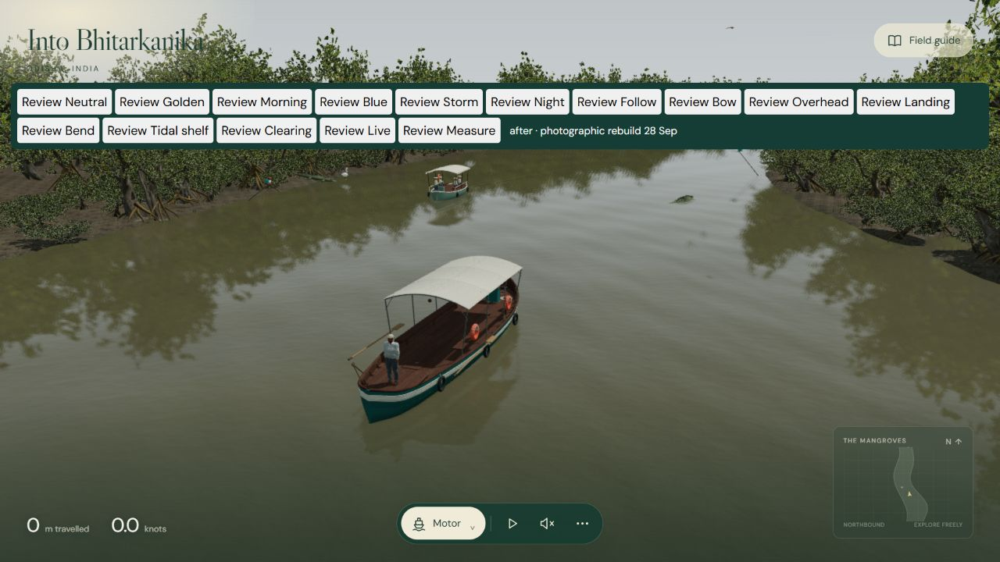
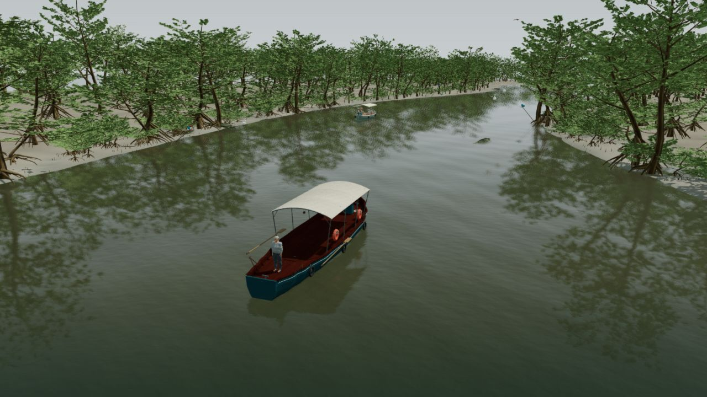
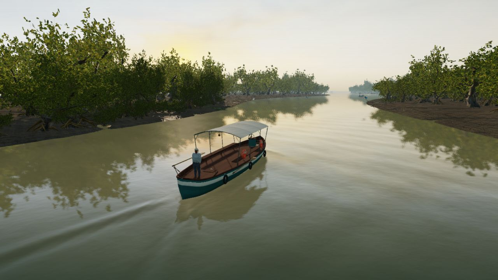
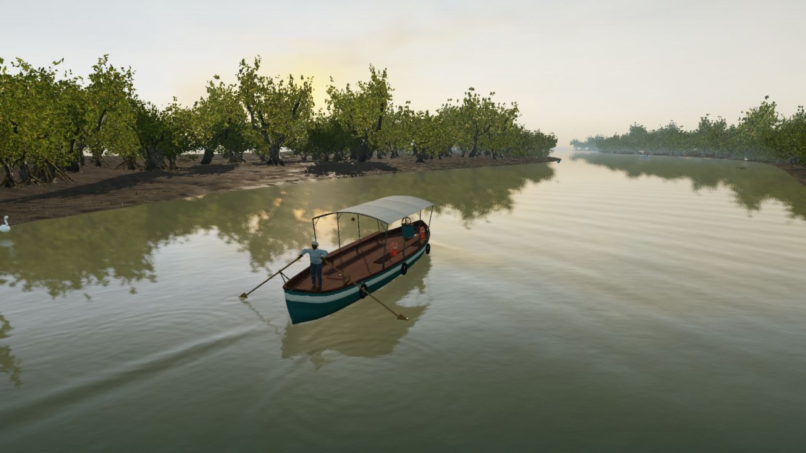
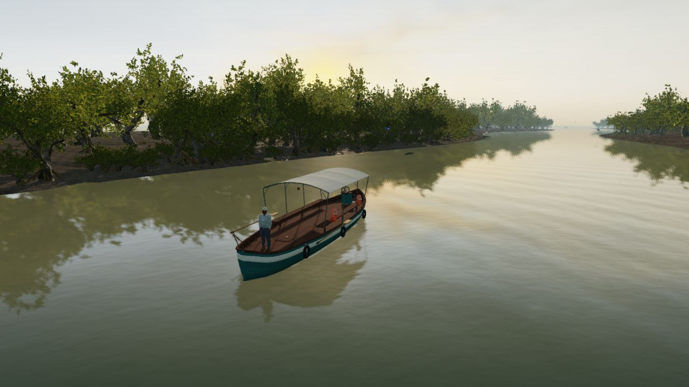
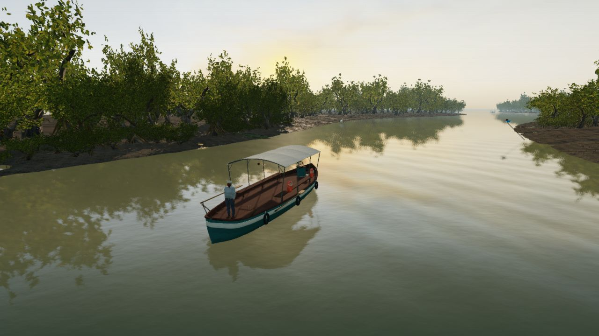

Closer to a real creek.
Scanned coastal wood and foliage, textured tidal sediment, a curved working launch, and more consistent light. Compare the frozen previous High build with this material and asset rebuild. The preview opens the same current local application, with its normal controls.


PREVIOUS HIGHREBUILT HIGHMatched camera and 48° field of view, boat pose (0, 0, heading 0.13), simulation time 42 seconds, 1280 × 720 CSS pixels and drawing buffer. Neutral daylight uses the exact same sky, environment and lights with no fog, bloom or grading. Weather views compare equivalent presets after 25 seconds of settling. Traffic may differ.


During the journey
Separate views of ordinary play, without locking the camera to the old comparison framing.


The normal Follow view.


Rowing follows the same controls and stroke simulation.


Overlapping canopy and a rooted creek bend.


Open sediment and vegetation at the tidal shelf.
Photographs set the target

Dense leafy fringe, crooked boughs and a narrow rooted ledge. Shubhamg81095, CC BY-SA 4.0.


Damp granular sediment, embedded roots and olive-brown water. Bodhan nayek, CC BY-SA 4.0.

On this Windows PC with AMD integrated graphics, final High measured 26.2 fps in the matched view and 27.5 fps during travel at 1280 × 720; frame p95 was 50.1 ms. The previous High measured 45.6 fps. Sampled JavaScript heap was about 173–175 MiB; GPU allocation bytes are unavailable. The optional High assets total 52.59 MiB. All 120 tests pass. Standard remains the lightweight fallback. Imported coastal assets are not scans of Bhitarkanika itself.